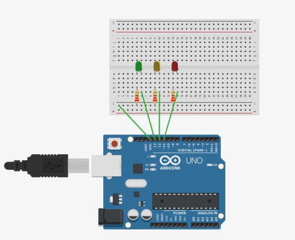
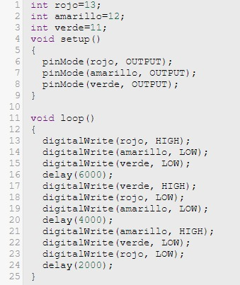

Proyecto de Semáforo con Arduino Utilizando Tinkercad

Introducción
El proyecto de crear un semáforo con Arduino utilizando Tinkercad es una excelente manera de aprender sobre electrónica básica y programación de microcontroladores. Tinkercad es una plataforma en línea gratuita y fácil de usar que permite simular circuitos electrónicos y programar Arduino sin necesidad de hardware físico. Este proyecto es ideal para principiantes que desean comprender cómo funcionan los semáforos y cómo se pueden programar con Arduino.
Componentes Necesarios
Para llevar a cabo este proyecto, se requieren los siguientes componentes virtuales en Tinkercad:
- Placa Arduino Uno
- LEDs (rojo, amarillo y verde)
- Resistencias (220 ohmios)
- Protoboard (placa de pruebas)
- Cables de conexión
Pasos para Realizar el Semáforo:
- Coloca la placa Arduino Uno en el área de trabajo.
- Añade el protoboard y conecta los LEDs a la placa de pruebas: el LED rojo, el LED amarillo y el LED verde.
- Conecta el cátodo (pierna más corta) de cada LED a la línea negativa de la protoboard.
- Conecta el ánodo (pierna más larga) de cada LED a diferentes pines digitales de la placa Arduino (por ejemplo, pines 8, 9 y 10).
- Inserta una resistencia de 220 ohmios en serie con cada LED para limitar la corriente.
- Utiliza cables de conexión para enlazar los LEDs y las resistencias con los pines correspondientes en la placa Arduino.
- Asegúrate de que la línea negativa de la protoboard esté conectada a un pin de tierra (GND) en la placa Arduino.
Código

- Se declaran tres variables de tipo entero para representar los pines digitales a los que están conectados los LEDs del semáforo: el LED rojo está en el pin 13, el LED amarillo en el pin 12 y el LED verde en el pin 11.
- La función setup() se ejecuta una vez cuando el Arduino se enciende o se reinicia. Aquí se configuran los pines 11, 12 y 13 como salidas, utilizando la función pinMode(). Esto permite que el Arduino pueda enviar señales de voltaje a los LEDs conectados a estos pines para encenderlos o apagarlos.
- La función loop() se ejecuta repetidamente en un bucle infinito mientras el Arduino está encendido. Esta función contiene la lógica para controlar la secuencia del semáforo.
Luz Roja
- digitalWrite(rojo, HIGH);:Enciende el LED rojo.
- digitalWrite(amarillo, LOW);:Asegura que el LED amarillo esté apagado.
- digitalWrite(verde, LOW);:Asegura que el LED verde esté apagado.
- delay(6000);: Mantiene el LED rojo encendido durante 6000 milisegundos (6 segundos).
Luz Verde
- digitalWrite(verde, HIGH);: Enciende el LED verde.
- digitalWrite(rojo, LOW);: Asegura que el LED rojo esté apagado.
- digitalWrite(amarillo, LOW);: Asegura que el LED amarillo esté apagado.
- delay(4000);: Mantiene el LED verde encendido durante 4000 milisegundos (4 segundos).
Luz Amarilla
- digitalWrite(amarillo, HIGH);: Enciende el LED amarillo.
- digitalWrite(verde, LOW);: Asegura que el LED verde esté apagado.
- digitalWrite(rojo, LOW);: Asegura que el LED rojo esté apagado.
- delay(2000);: Mantiene el LED amarillo encendido durante 2000 milisegundos (2 segundos).